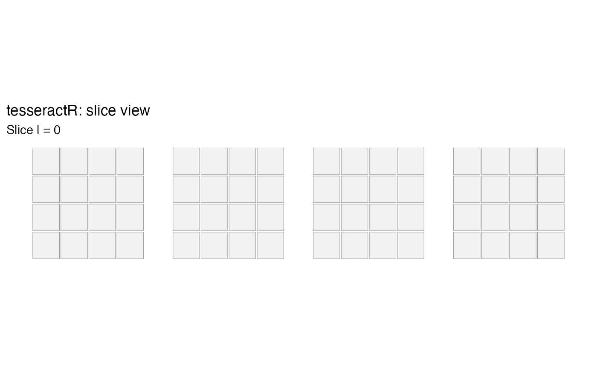

Holds one of the four hypercube axes at a fixed value, dropping the board to
a 3D 4x4x4 cube, then renders that cube as a 1x4 strip of 4x4 mini-boards.
Use this view to make through-all-four-dimensions diagonals read as straight
lines within a single plane. Returns a ggplot object.
Usage
tsr_plot_slice(
board,
axis = c("i", "j", "k", "l"),
at = 0L,
highlight_win = TRUE,
...
)Details
Convention: of the three remaining axes, the highest-numbered is used as the block axis (the strip dimension); the other two form each mini-board.
Examples
tsr_plot_slice(tsr_new_board(), axis = "l", at = 0L)
